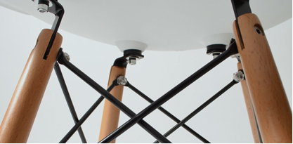
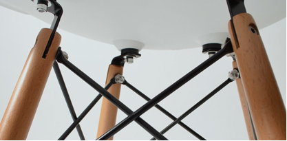

Noah Andrews
The World of
Charles & Ray Eames
12 January 2016
With grand sense of adventure, Charles and Ray turned their curiosity and boundless enthusiams into creations that establish then as a truly great husband and wife design team. Their unique synergy led to a whole new look in furniture. Lean and modern. Playful and functional. Sleek, sophisticated and beautifully simple. That was and is the "Eames look."

"That look and their relationship with Herman Miller started with moulded plywood chairs in the late 1940s and included the world-renowned Eames lounge chair, now in the permanent collection of the Museum of Modern Art in New York"
"Charles and Ray achieved their monumental success by approaching each project the same way:Does it interest and intrigue us? Can we make it better?"
"Choose your corner, pick away at it carefully, intensely & to the best of your ability, & that way, you might change the world"
- Charles Eames
"The loved their work, which was a combination of art and science, design and architechture, process and product, style and function."The details are not details", said Charles."They make the product".
 

"Their own concepts evolved over time, not overnight. As Charles noted about the development of the Moulded Plywood Chairs,"Yes, it waas a flash if inspiration", he said, "a kind of 30-year flash."
"A design critic ounce said that this extraordinary couple "just wanted to make the world a better place". That they did. That also made it a lot more interesting."